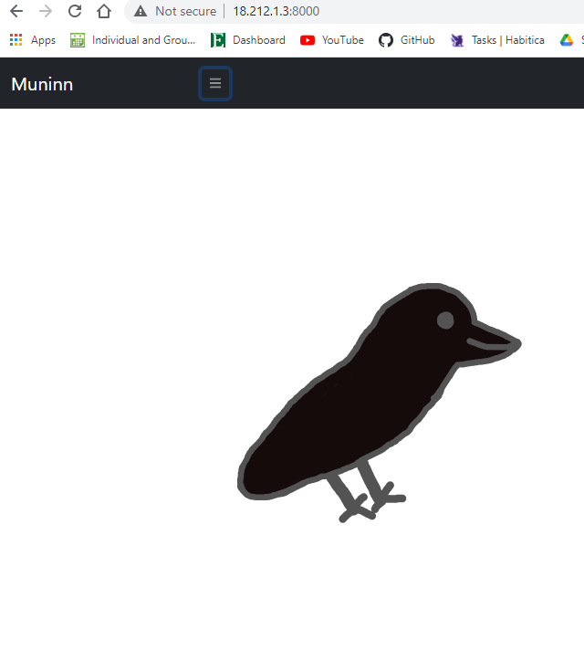
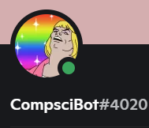
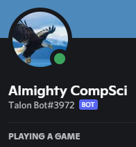
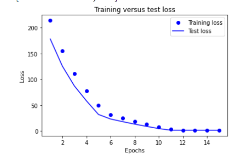

Django, Python, Bootstrap, AWS, Bash |
A productivity web app that uses animal collection to motivate users to finish tasks. Backed by positive reinforcement and game mechanisms. Worked in the AWS deployment, front-end, and minimal back-end.

Javascript, React Native |
A mobile app that combines a simple UI with more complex financial information. Allows features like saving goals and fixed percentage automatic distributions. Gives information on projected savings and projected debt changes.

Python |
Re-Created a project that runs different operations for an active student community on a messaging platform. Worked on timed message scheduling, storing and indexing student quotes, as well as general readability and organization.
Javascipt, Node.js |

Created a multifaceted JavaScript project that runs day to day operations on the messaging platform
Discord. Maintained and created the files that organize, create, and sort messaging channels using a
CSV file or integrated command.

Python, Tensorflow |
A past research project that worked on fitting a neural network to data on mosquitos, matching the sound signatures to the species that made them.
This was a small piece of a larger project that worked to identify malaria carrying mosquitos from other species, for humanitarian efforts.